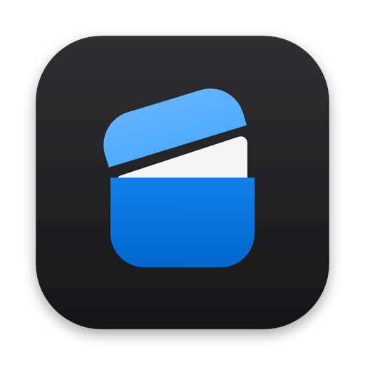

UNZIP
팝업 없이 조용히 풀고,
Windows에서 만든 한글 파일명도 깨지지 않습니다.
brew install --cask lessthanchan/tap/unzip-app
한글 파일명 그대로
Windows에서 만든 압축 파일의 한글 파일명을 알아서 맞춰 풉니다. 그래도 깨지면 미리보기를 보며 인코딩을 고릅니다.
팝업 없이 창 하나
암호 입력, 진행률, 오류까지 작은 창의 한 줄 안에서 끝납니다. 다 풀리면 조용히 사라집니다.
압축도 됩니다
폴더를 놓으면 zip, 7z, tar 등 6가지 형식으로 묶습니다. 압축 파일 여러 개를 한 폴더에 모아 풀 수도 있습니다.
70개 형식
zip, rar, 7z, tar 등 흔히 받는 압축 파일을 한 앱으로 풉니다. 실패해도 풀다 만 파일을 남기지 않습니다.
처음 열 때 "열 수 없음"이 뜨면
시스템 설정 → 개인정보 보호 및 보안으로 가서 아래쪽의 그래도 열기를 누르세요. 한 번만 하면 됩니다.